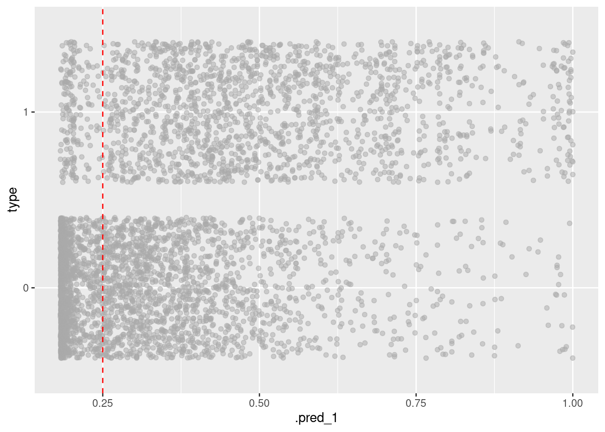

library(tidyverse)
library(tidymodels)
hp_spam <- read_csv("hp-spam.csv")Logistic regression
Warm up
Check-in
- Feedback on project proposals by the end of the week.
- Exam review will be posted by the end of the week.
- Exam:
- In class: Fri, June 7th (1 sheet of notes allowed)
- Take home due Sun, June 9th
Logistic regression
So far in regression
Outcome: Numerical, Predictor: One numerical or one categorical with only two levels \(\rightarrow\) Simple linear regression
Outcome: Numerical, Predictors: Any number of numerical or categorical variables with any number of levels \(\rightarrow\) Multiple linear regression
Outcome: Categorical with only two levels, Predictors: Any number of numerical or categorical variables with any number of levels \(\rightarrow\) Logistic regression
Outcome: Categorical with any number of levels, Predictors: Any number of numerical or categorical variables with any number of levels \(\rightarrow\) Generalized linear models – Not covered in STA 101
Data + packages
4601 emails collected at Hewlett-Packard labs and contains 58 variables
Outcome:
typetype = 1is spamtype = 0is non-spam
Predictors of interest:
capitalTotal: Number of capital letters in emailPercentages are calculated as (100 * number of times the WORD appears in the e-mail) / total number of words in email
george: Percentage of “george”s in email (these were George’s emails)you: Percentage of “you”s in email
Glimpse at data
What type of data is type? What type should it be in order to use logistic regression?
hp_spam |>
select(type, george, capitalTotal, you)# A tibble: 4,601 × 4
type george capitalTotal you
<dbl> <dbl> <dbl> <dbl>
1 1 0 278 1.93
2 1 0 1028 3.47
3 1 0 2259 1.36
4 1 0 191 3.18
5 1 0 191 3.18
6 1 0 54 0
7 1 0 112 3.85
8 1 0 49 0
9 1 0 1257 1.23
10 1 0 749 1.67
# ℹ 4,591 more rowsEDA: How much spam?
hp_spam |>
count(type) |>
mutate(p = n / sum(n))# A tibble: 2 × 3
type n p
<dbl> <int> <dbl>
1 0 2788 0.606
2 1 1813 0.394EDA: AM I SCREAMING? capitalTotal
ggplot(hp_spam, aes(x = capitalTotal)) +
geom_histogram()`stat_bin()` using `bins = 30`. Pick better value with `binwidth`.EDA: george, is that you?
ggplot(hp_spam, aes(x = george)) +
geom_histogram()`stat_bin()` using `bins = 30`. Pick better value with `binwidth`.ggplot(hp_spam, aes(x = you)) +
geom_histogram()`stat_bin()` using `bins = 30`. Pick better value with `binwidth`.Logistic regression
Logistic regression takes in a number of predictors and outputs the probability of a “success” (an outcome of 1) in a binary outcome variable.
The probability is related to the predictors via a sigmoid link function, \[ p(y_i = 1) = \frac{1}{1+\text{exp}({- \sum \beta_i x_i })}, \]whose output is in \((0,1)\) (a probability).
Can also be written as
\[ p(y_i = 1) = \frac{\text{exp}({\sum \beta_ix_i})}{1 + \text{exp}({\sum \beta_ix_i})} \]
or in Logit form
\[ \text{logit}(p) = \log(\frac{p}{1 - p}) = \sum\beta_ix_i \]
where \(p = p(y_i = 1)\).
- In this modeling scheme, one typically finds \(\hat{\beta}\) by maximizing the likelihood function, another objective function, different than our previous “least squares” objective.
Logistic regression, visualized
Using data to estimate \(\beta_i\)
To proceed with building our email classifier, we will, as usual, use our data (outcome \(y_i\) and predictor \(x_i\) pairs), to estimate \(\beta\) (find \(\hat{\beta}\)) and obtain the model: \[ p(y_i = 1) = \frac{1}{1+\text{exp}({- \sum \hat{\beta}_i x_i})}, \]
In this lecture, we’ll build a spam filter. Or, at least, learn a bit about how spam filters are built by building a very simple (likely not very effective) one.
Goals
Understand logistic regression as a linear model of binary outcomes
Fit and interpret logistic regression models in R
To illustrate logistic regression, we will build a spam filter from email data. Today’s data consists of 4601 emails that are classified as spam or non-spam.
The data was collected at Hewlett-Packard labs and contains 4601 variables. The first 48 variables are specific keywords and each observation is the percentage of appearance of that word in the message. Click here to read more.
The basic logic of our model is that the frequency of certain words can help us determine whether or not an email is spam.
For example, these emails came from George’s inbox. If the word “george” (george) is not present in the message and the dollar symbol (charDollar) is, you might expect the email to be spam.
Using this data, we want to build a model that predicts whether a new email is spam or not. How do we build a model that can do this?
Building intuition
Exercise 1
One predictor model: Visualize a linear model where the outcome is type (spam or not) and george is the only predictor. Then, discuss your visualization with your neighbor. Is this a good model? Why or why not?
Doesn’t make sense to draw a line and predict values between 0 and 1.
ggplot(hp_spam, aes(x = george, y = type)) +
geom_point() +
geom_smooth(method = "lm", se = FALSE)`geom_smooth()` using formula = 'y ~ x'Exercise 2
Two predictor model: In this exercise focus on two predictors: you and capitalTotal.
- Create a visualization with
youon the x-axis andcapitalTotalon the y-axis. Color data points by whether or not they are spam (type). Make sure thattypeis being used as a categorical variable (factor).
hp_spam <- hp_spam |>
mutate(type = as.factor(type))
ggplot(hp_spam, aes(x = you, y = capitalTotal, color = type)) +
geom_point(alpha = 0.2)- Fit the model predicting
typefromyouandcapitalTotal. Comment on how the code differs from code used in previous models we fit. Also comment on how it’s similar.
spam_fit <- logistic_reg() |>
fit(type ~ you + capitalTotal, data = hp_spam)
tidy(spam_fit)# A tibble: 3 × 5
term estimate std.error statistic p.value
<chr> <dbl> <dbl> <dbl> <dbl>
1 (Intercept) -1.50 0.0554 -27.1 2.97e-162
2 you 0.361 0.0198 18.3 1.84e- 74
3 capitalTotal 0.00173 0.000104 16.6 5.66e- 62Exercise 3
Write the model equation.
\[ logit(\hat p) = -1.50 + 0.362 \times you + 0.00173\times capitalTotal \]
\[ log(\frac{\hat p}{1 - \hat p}) = -1.50 + 0.362 \times you + 0.00173\times capitalTotal \]
Exercise 4
What is the probability the email is spam if the frequency of you is 5% in the email and there are 2500 capital letters.
- First, so this “by hand” (using R as a calculator) and the model you wrote in the previous exercise.
logit_phat = -1.50 + 0.362 * 5 + 0.00173* 2500
phat <- exp(logit_phat)/(1 + exp(logit_phat))
phat[1] 0.9903872- Then, do it using R functions designed for prediction.
new_email <- tibble(
you = 5,
capitalTotal = 2500
)
predict(spam_fit, new_data = new_email)# A tibble: 1 × 1
.pred_class
<fct>
1 1 predict(spam_fit, new_data = new_email, type = "prob")# A tibble: 1 × 2
.pred_0 .pred_1
<dbl> <dbl>
1 0.00963 0.990Visualizing logistic regression
Just because there’s greater than 50% probability an email is spam doesn’t mean we have to label it as such. We can adjust our threshold or critical probability, a.k.a. decision boundary to be more or less sensitive to spam emails.
spam_aug_1 <- augment(spam_fit, new_data = hp_spam)
decision_boundary <- 0.25
ggplot(spam_aug_1, aes(x = .pred_1, y = type)) +
geom_jitter(alpha = 0.5, color = "darkgray") +
geom_vline(xintercept = decision_boundary, color = "red", linetype = "dashed")
In other words we get to select a number \(p^*\) such that
if \(p > p^*\), then label the email as spam.
Exercise 5
What would you set your decision boundary to and why?
Change
decision_boundaryin the code above to 0.01 and 0.999999. Do the results surprise you? Why or why not?
Exercise 6
If you set a lower decision boundary, do you label fewer or more emails as spam? What happens if you set 0 as your boundary? What about 1 as your boundary? If you very much dislike spam, should you set a high or low boundary?
*Lower boundary means that we label more emails as spam, high boundary means fewer emails as spam. We can adjust the boundary depending on how much we value receiving important emails vs. how much we dislike spam.
0 means all emails are spam, 1 means no emails are spam. Note you cannot set decision boundary to 0 or 1 because of logit function (would evaluate to inf or negative inf). *
Classify a new email
Read a new email and figure out values of you and capitalTotal (code already provided below) and store these in a new tibble called new_email.
email_text <- read_lines("email-text.txt")
email_text[1] "You Have Been Selected To Win A Free Trip To Disney World! "
[2] ""
[3] "YOU HAVE 30 SECONDS TO CLICK HERE TO CLAIM YOUR REWARD!"
[4] ""
[5] "WHAT ARE YOU WAITING FOR? ACT NOW!"
[6] ""
[7] "SINCERELY,"
[8] ""
[9] "WALT DISNEY" totalWord <- sum(str_count(email_text, " "))
totalYou <- sum(str_count(tolower(email_text), "you"))
you <- 100 * totalYou / totalWord
capitalTotal <- sum(str_count(email_text, "[A-Z]"))
new_email <- tibble(
you = you,
capitalTotal = capitalTotal
)Exercise 6
Using your model, predict whether this email will be classified as spam or not. What does the model predict for the probability that this email is spam? With a decision boundary of 0.5, how does the model classify this email? Do you believe this classification? Why or why not?
predict(spam_fit, new_data = new_email)# A tibble: 1 × 1
.pred_class
<fct>
1 1 predict(spam_fit, new_data = new_email, type = "prob")# A tibble: 1 × 2
.pred_0 .pred_1
<dbl> <dbl>
1 0.0254 0.975The model predicts 0.99 probability that this new email is spam. This seems reasonable based on the new email text.
Assessing predictive ability
We will divide the data into a training set and testing set.
set.seed(17)
hp_spam_split <- initial_split(hp_spam)
hp_spam_train <- training(hp_spam_split)
hp_spam_test <- testing(hp_spam_split)Exercise 7
Inspect hp_spam_split. How many emails are in hp_spam_train, how many are in hp_spam_test. Check out the documentation for the initial_split() function, what ratio does it use for splitting the dataset into training and testing samples?
initial_split() splits the data so that 3/4 are are saved for training and 1/4 are saved for testing.
hp_spam_split<Training/Testing/Total>
<3450/1151/4601>Exercise 8
Train your model on the training set. Build a predictive model using any combination of predictors from hp_spam to predict type. Save your fitted model as my_model_fit and display its tidy summary.
my_model_fit <- logistic_reg() |>
fit(type ~ you + capitalTotal, data = hp_spam_train)
tidy(my_model_fit)# A tibble: 3 × 5
term estimate std.error statistic p.value
<chr> <dbl> <dbl> <dbl> <dbl>
1 (Intercept) -1.46 0.0635 -23.1 1.31e-117
2 you 0.353 0.0227 15.5 2.25e- 54
3 capitalTotal 0.00170 0.000119 14.3 2.51e- 46Exercise 9
Make predictions for your testing set and augment your testing set with these predictions.
my_model_aug <- augment(my_model_fit, hp_spam_test) |>
select(contains("pred"), type, you, capitalTotal)Exercise 10
What are the false positive and false negative rates of this model?
my_model_aug |>
count(type, .pred_class) |>
group_by(type)|>
mutate(prop = n/sum(n))# A tibble: 4 × 4
# Groups: type [2]
type .pred_class n prop
<fct> <fct> <int> <dbl>
1 0 0 626 0.879
2 0 1 86 0.121
3 1 0 247 0.563
4 1 1 192 0.437